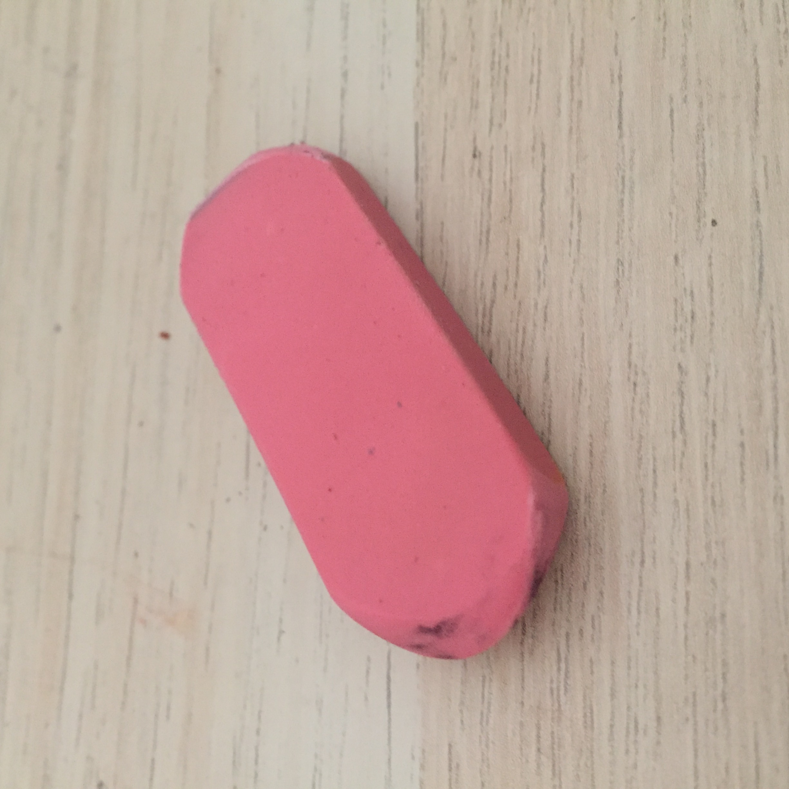
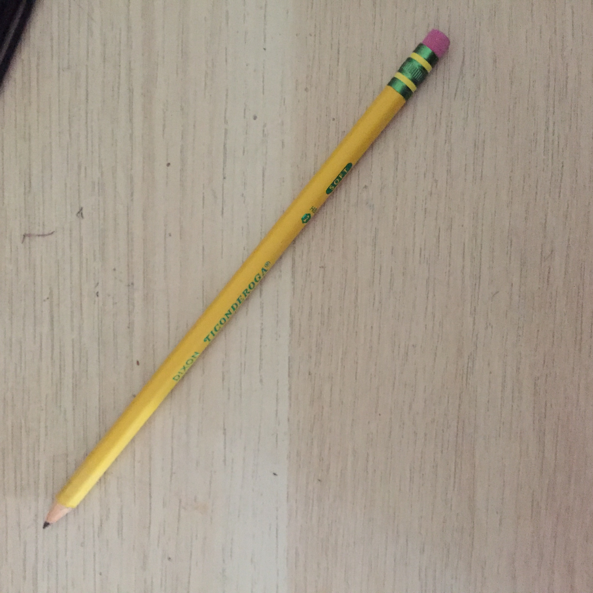
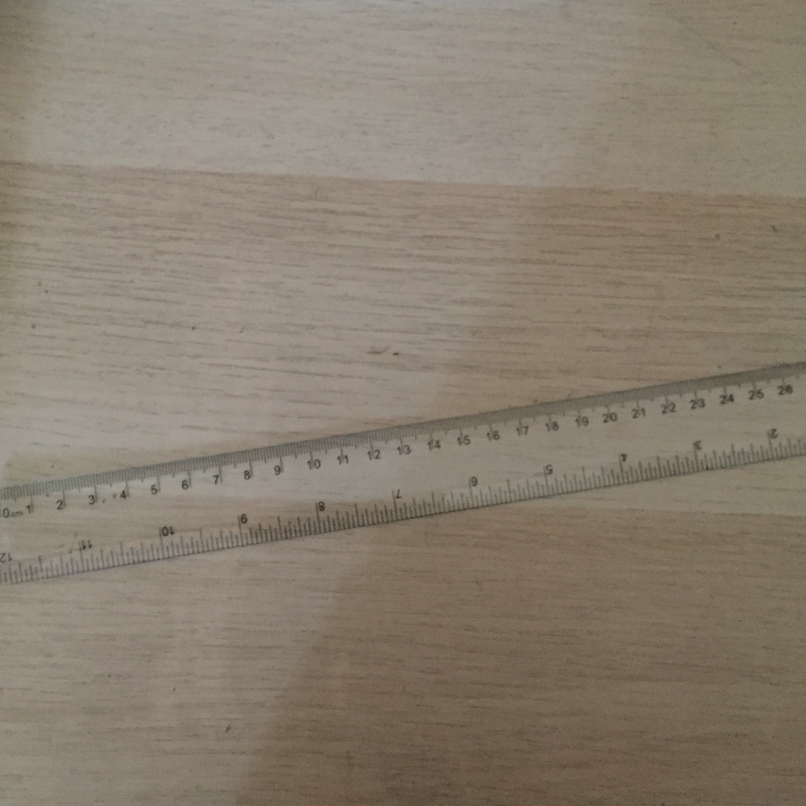
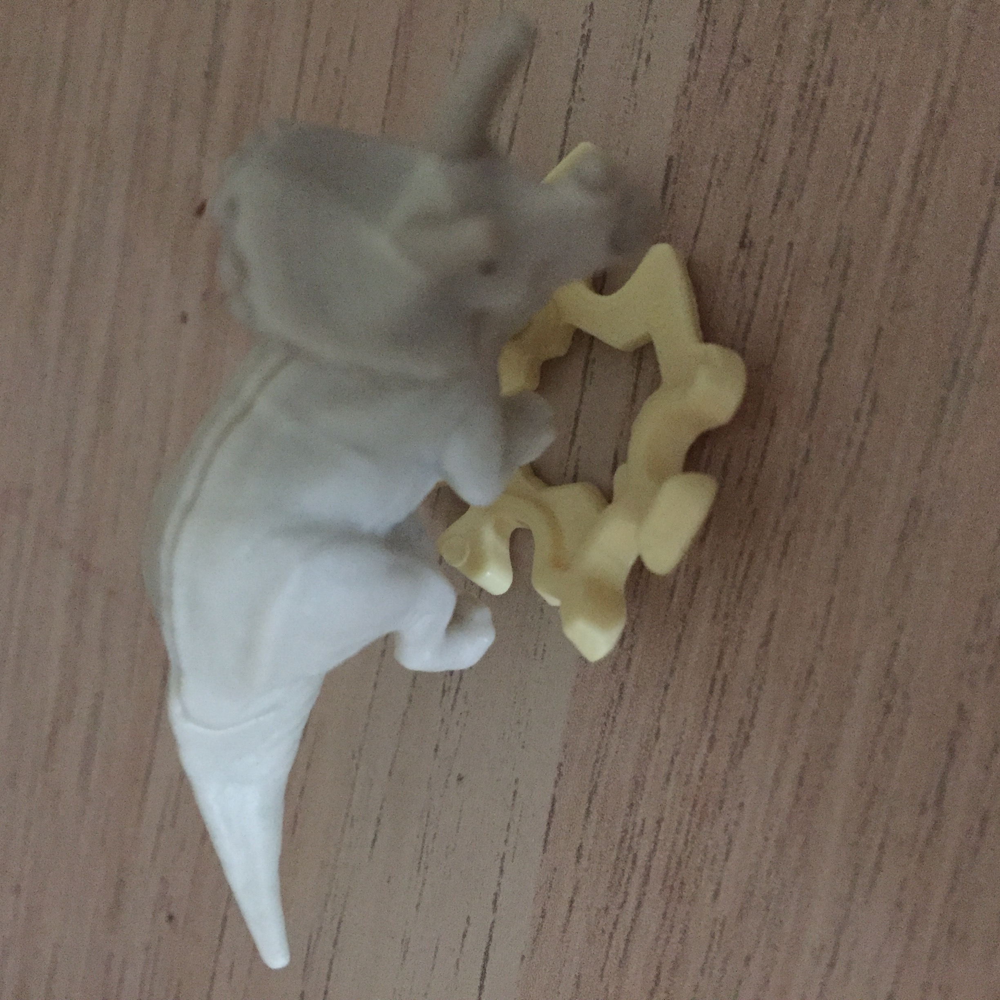
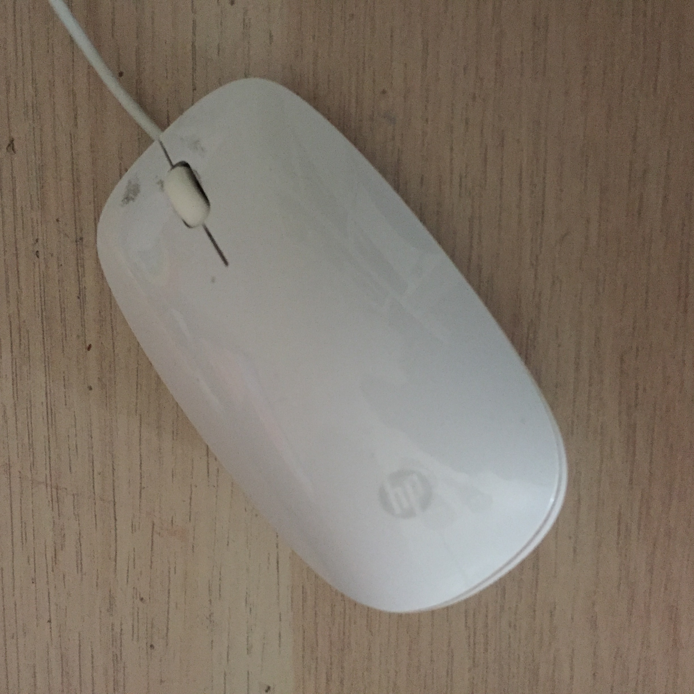

Case Study Between Google Lens And MobileNet Model
- Test Image - 
- Test Image - 
- Test Image - 
- Test Image - 
- Test Image - 
Output On Google Lens - Rubber Eraser
Output On MobileNet - Rubber Eraser and Pencil Eraser
Result -
Tie - Google Lens and MobileNet Were Both Able To Identify The Object As A Rubber Eraser
Output On Google Lens - Pencil
Output On MobileNet - Drumstick, Viola, and Chello
Result -
Google Lens Wins - Google Lens Identified Pencil and Showed The Same Brand Of Pencils. While, MobileNet Was Unable To Idenify The Object Correcly Identifying It As A Drumstick, Viola, And Chello
Output On Google Lens - Monograph Brass Ruler
Output On MobileNet - Rule and Ruler
Result -
Tie - MobileNet Idenified Ruler and Rule. Google Lens Identified Monograph Brass Ruler And Showed Pictures Of Wooden Rulers. So, Both MobileNet and Google Lens Identified A Ruler But, MobileNet Didn't Give A Type Of Ruler and Google Lens Gave The Wrong Type Of Ruler
Output On Google Lens - Triceratops and Kinder Joy Toy
Output On MobileNet - Triceratops
Result -
Google Lens Wins - The Object Is A Tricertops Toy From A Kinder Joy. Google Lens Identifies A Kinder Joy Toy But, MobileNet Identifies A Triceratops
Output On Google Lens - Apple Mighty Mouse Wired
Output On MobileNet - Mouse and Computer Mouse
Result -
Google Lens Wins - The Mouse Is A Wired HP Mouse But, Google Lens May Have Identified A Apple Mighty Mouse Wired, It Still Identified A Wired Mouse. While MobileNet Identified It As A Computer Mouse and Mouse It Does Not Identify That It Is A Wired Computer Mouse
Out Of The 5 Objects Tested, Google Lens Identified 3 Objects More Accurately Than MobileNet. MobileNet Identified 0 Objects More Accurately Than Google Lens And They Both Tied 2 Times. Therfore, Google Lens Is More Accurate